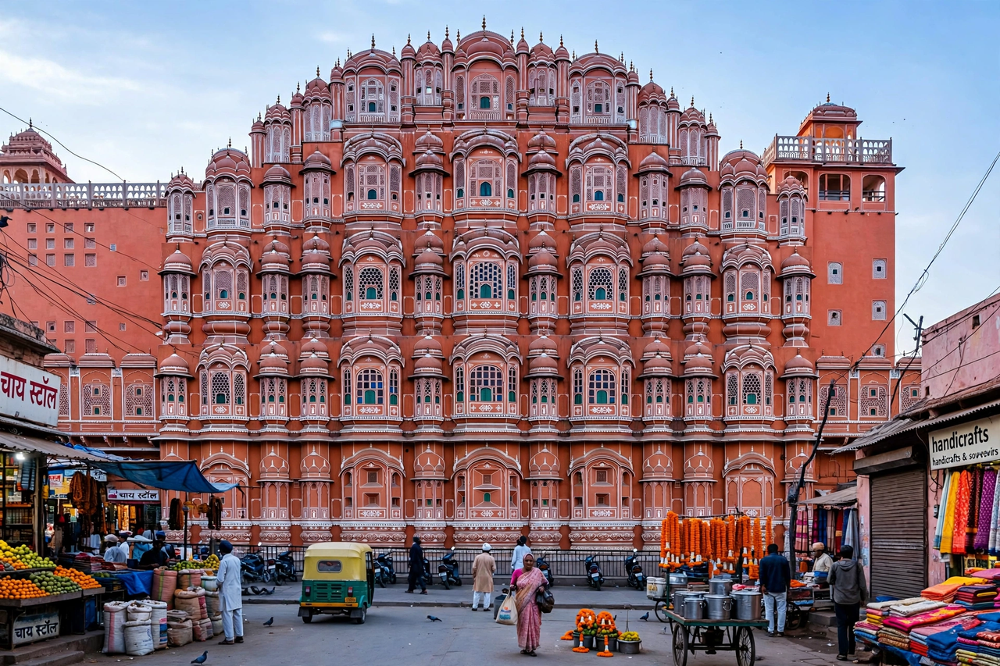

| Sawai Pratap Singh | |
|---|---|
 The Hawa Mahal, built by Pratap Singh in 1799 | |
| Maharaja of Jaipur | Reign 1778 – 1803 |
| Born | 2 December 1764, Jaipur |
| Died | 1 August 1803 (aged 38), Jaipur |
| House | Kachhwaha |
| Father | Sawai Madho Singh I |
Sawai Pratap Singh (2 December 1764 – 1 August 1803) was the Maharaja of Jaipur from 1778 to 1803, a ruler of the Kachhwaha Rajput clan. He is best remembered as the builder of the Hawa Mahal, the celebrated five-storeyed "Palace of Winds" in Jaipur, and as a poet and patron of art and culture writing under the pen name Brijnidhi.
Pratap Singh ascended the throne at the age of fourteen on the death of his elder brother Prithvi Singh II. His reign was dominated by the struggle to defend Jaipur against the expanding power of the Marathas under Mahadaji Scindia. Jaipur's forces won a celebrated victory at the Battle of Tunga in 1787, but were heavily defeated at Patan in 1790, after which Jaipur paid large tributes to the Marathas.
In 1799 Pratap Singh commissioned the Hawa Mahal, designed by the architect Lal Chand Ustad. Built of red and pink sandstone in the form of the crown of the god Krishna, its 953 small windows (jharokhas) allowed the royal women to observe street festivals unseen, while the screen of openings channels cooling breezes through the interior — an effect sometimes explained by the Venturi effect. The Hawa Mahal remains the most iconic symbol of Jaipur.
A devotee of Krishna, Pratap Singh composed devotional poetry in Braj Bhasha under the name Brijnidhi and gathered poets and musicians at his court. His reign saw a flowering of Jaipur miniature painting.